Pour cela, vous disposez d’une scène (comme des pâturages) contenant des « cellules » dans lesquelles vous pouvez les enfermer.
Les limaces ont la particularité de vous suivre ou plutôt de suivre un curseur que vous pouvez déplacer. Le curseur symbolise une balise émettant un signal qui attire les limaces. Cependant, lorsqu’une limace touche la balise, celle-ci perd de son effet attirant et les limaces ont de plus en plus tendance à errer. Votre balise a un certain nombre de points d’effet. Lorsqu’elle touche une limace de face, elle perd 2 points ; lorsque la balise touche le côté d’une limace, elle perd 1 point. En revanche, aucun point n’est perdu lorsque la balise touche l’arrière d’une limace. La balise a un effet de départ égal à 5 fois le nombre de bêtes présentes. La probabilité pour qu’une limace suive la balise est égal au rapport entre le nombre de points de la balise à ce moment et le nombre de points qu’elle avait au départ.
Dans une scène, vous pourrez trouver trois sortes d’éléments : des murs, des portes et des déclencheurs (rouges et bleus). Votre balise, comme pour les limaces, ne peut franchir les murs ainsi que les portes qui ne sont pas ouvertes (c’est-à-dire qui sont en train de se fermer ou qui le sont déjà). Notez bien que les limaces ne font demi-tour que lorsqu’elles sont dans un cul-de-sac.
Pour passer au niveau suivant vous devez avoir atteint un certain nombre de points appelé « barre » (la notion de partie n’existe pas encore dans les versions inférieures à la version 1.0).
Le score d’un niveau se compose des totaux suivants :
| Chemins | 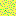 | 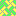 | |
| Murs | 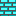 | 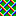 | |
| portes ouvertes | 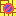 | ||
| portes fermées | 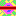 | ||
| 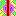 | 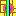 |
Le programme a deux modes : le mode Jeu et le mode Éditeur. Le mode Jeu est le mode par défaut au lancement (à partir de la version 1.3).
Le mode Jeu permet de jouer une partie en commençant par le niveau 0 d’une série jusqu’au dernier niveau ou jusqu’à ce que la barre d’un niveau ne soit pas atteinte (voir règle du jeu). La série par défaut a pour nom débutant (à partir de la version 1.3). Si les niveaux de cette série sont dans le même dossier que le programme, le premier niveau de cette série est automatiquement chargé et prêt à être lancé. Sinon, le programme vous demandera d’en ouvrir une. Si vous ne spécifiez pas de série, le mode par défaut devient alors le mode éditeur.
Le mode Éditeur permet de créer, modifier et tester des niveaux (le plus intéressant des modes).
En mode Jeu, le menu Partie est accessible mais pas le menu Editeur. Le titre de la fenêtre contient le commentaire sur le niveau courant (il contient quelques fois un indice concernant le niveau !).
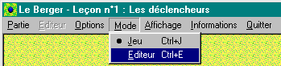
Toutes les commandes principales de jeu sont dans le menu Partie :
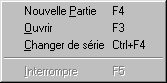
La rubrique Nouvelle (F4 au clavier) permet de commencer une nouvelle partie avec la série courante.
La rubrique Ouvrir (F3 au clavier) affiche la fenêtre suivante :
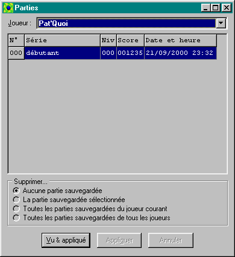
Il faut tout d’abord choisir un nom dans la liste Joueur.
Il est possible d’accéder à cette fenêtre des parties dans la rubrique Parties sauvegardées du menu Informations du menu principal ou en appuyant sur Ctrl+G. Par cet accès, il n’est pas possible d’ouvrir une partie sauvegardée.
La rubrique Changer de série (Ctrl+F4 au clavier) permet de choisir une autre série. Une boîte de dialogue vous demande alors de choisir le fichier du premier niveau de la série souhaitée.
La partie est automatiquement sauvegardée après chaque niveau réussi. Dans ce cas, cette sauvegarde remplace l’éventuelle sauvegarde de la même partie au niveau précédent.
Pendant le jeu, les commandes de jeu deviennent accessibles.
En mode Éditeur, le menu Editeur est accessible mais pas le menu Partie.
Toutes les commandes principales de l’éditeur sont dans le menu Editeur :
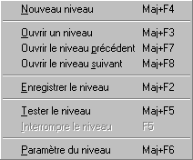
Un niveau fait toujours partie d’une série. La série Original correspond aux niveaux d’origine du jeu dans sa version Dos. Un niveau est donc défini par un nom de série et un numéro.
Exemple : original.012.NLB (13ème niveau de la série Original).
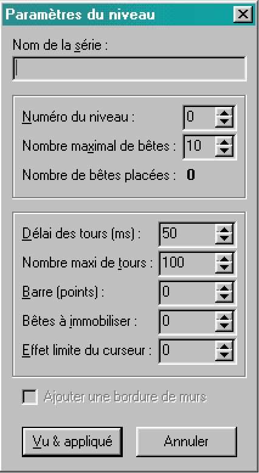
Il s’agit de définir les paramètres principaux du niveau à créer (dans l’ordre) :
Il est possible de mettre une bordure de murs dans l’arène en cochant la case Ajouter une bordure de murs.
Enfin, appuyer sur Vu & appliqué pour valider les paramètres et enfin commencer la saisie des éléments du niveau.
Pour poser ou retirer un élément dans l’arène, vous avez deux possibilités :
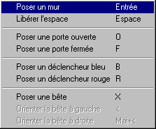
À ceci s’ajoute la restriction d’enregistrer le niveau avant de le tester.
À chaque fois que l’une de ces règles ne sera pas respectée, un message vous le signalera. Ils sont signalés dans une boîte de dialogue avec un point d’exclamation si l’option Affichage | Messages | Dans une boîte de dialogue est sélectionnée, ou en défilant dans la ligne de statut en bas de la fenêtre principale si l’option Affichage | Messages | Dans la ligne de statut est sélectionnée.
Une fois terminée la saisie des éléments du niveau, enregistrez-le en choisissant la rubrique Editeur | Enregistrer le niveau ou en appuyant sur Maj+F2.
Vous pouvez régler l’affichage des différents éléments dans l’arène ainsi que le quadrillage en mode Éditeur : allez dans le menu Affichage | Editeur (voir ci-dessous). La rubrique Rien (Ctrl+zéro) permet de n’afficher aucun élément (que les chemins) et Tout (Ctrl+zéro) permet d’afficher tous les éléments.
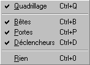
Pour arrêter le test, appuyez à nouveau sur Ctrl+F5. Pour faire une pause, utilisez F5 (Interrompre le niveau). Appuyez à nouveau sur F5 pour poursuivre le niveau.
Lorsque vous battez un record une fenêtre de ce type s’affiche :
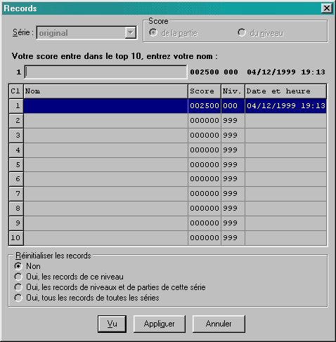
Vous devez alors entrer votre nom.
Cette fenêtre s’affiche aussi bien lorsque vous battez un record de niveau qu’un record de partie pour la série courante.
Cette fenêtre permet également de consulter les records d’une série, d’une partie et d’un niveau donné. Pour afficher cette fenêtre, choisissez la rubrique Records... du menu Informations dans le menu principal ou alors appuyez sur Ctrl+R.
Pour afficher des records :
Il est également possible d’effacer des records : cliquez sur le bouton radio correspondant à votre choix dans le cadre Réinitialiser les records. Appuyez ensuite sur le bouton Appliquer ou sur le bouton Vu (ou Entrée) si vous voulez fermer la fenêtre des records.
En faisant un clic droit pendant le jeu, les commandes courantes s’affichent :
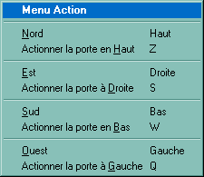
Cependant il est possible de les modifier en allant à la rubrique Jeu | Commandes au clavier (Ctrl+K). Cette boîte de dialogue apparaît :
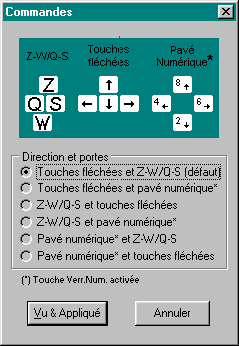
Il suffit alors de sélectionner un choix parmi 6 possibilités (respectivement les touches pour diriger la balise et les touches pour actionner les portes) puis de valider en appuyant du Vu & Appliqué. Comme il indiqué en bas de la boîte de dialogue, l’utilisation du pavé numérique nécessite l’activation du verrouillage numérique (touche Verr.Num. activée).
Une fenêtre de choix de couleur apparaît :
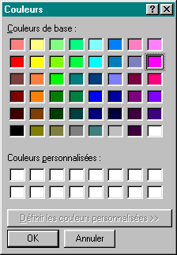
Il suffit alors de cliquer sur la case de la couleur souhaitée et d’appuyer sur le bouton OK.
Mode Jeu
Pour être en mode jeu, allez dans le menu Mode et vérifiez que le point est bien en face de Jeu. Dans le cas contraire appuyez dessus ou appuyez sur Ctrl+J (voir l’illustration ci-dessous).
La rubrique Arrêter (F4 au clavier) permet d’abandonner la partie en cours.
La rubrique Interrompre (F5 au clavier) permet de faire une pause dans une partie en cours
La rubrique Continuer (F5 au clavier) permet de reprendre la partie après l’avoir interrompue.
Lorsqu’un nom est sélectionné, la liste des parties sauvegardées s’affiche. Il suffit alors de double cliquer sur la partie souhaitée.
Appuyer sur Entrée ou appuyer sur le bouton Vu ouvre la partie sélectionnée.
Mode Éditeur
Pour être en mode Éditeur, allez dans le menu Mode et vérifiez que le point est bien en face de Editeur.
Dans le cas contraire appuyez dessus ou appuyez sur Ctrl+E (voir l’illustration ci-dessus).
À chaque niveau correspond un fichier dont le nom est formé comme ceci :
Créer un niveau
Choisissez Nouveau niveau dans le menu Editeur ou appuyez sur Maj+F4.
Une boîte de dialogue apparaît comme ceci :
Règles de disposition des éléments de jeu
Il faut respecter les règles suivantes de disposition des éléments de jeu :
Tester un niveau
Après avoir ouvert ou enregistré un niveau, vous pouvez le tester en choisissant la rubrique Editeur | Tester le niveau ou en appuyant sur Ctrl+F5. Il est possible de tester le niveau avec des paramètres d’affichage.
Records
Les records des parties et des niveaux d’une série sont mémorisées.
Commandes du jeu
Les commandes par défaut sont les suivantes :
Q + S
W
Autres paramétrages
L’autre option du jeu est la couleur du curseur (rubrique Options | Couleur du curseur... ou Ctrl+C).